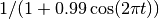
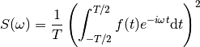
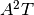

Exercises on Fourier analysis¶
Simple example of Fourier transform¶
Plot the Fourier transform of  for frequency below 50 Hz. using the fft function of the module numpy.fft.
- Which sample rate do you use ?
- On which duration should you calculate f ?
- What happens if this duration is 10 time too long ?
- What happens if it is not a multiple of the period of the signal ?
Solution
The sample rate should be at least 100 sample/s f is periodic. It should be calculated over one period
from numpy.fft import *
def function(t):
return 1/ (1+.99 * cos(2*pi*t))
Taux = 100 # Sample rate
T = 1. # duration
N = Taux * T # number of points
X = linspace(0,T,N, endpoint=False)
Y = function(X)
figure('exo 1A')
clf()
plot(X,Y)
Ytilde = fft(Y)
Freq = arange(N)
# The frequency is defined modulo N.
# We take values between -N/2 and N/2
Freq[Freq>=N/2] = Freq[Freq>=N/2] - N
Freq = Freq/T
figure('exo 1B')
clf()
loglog(Freq[1:N//2-1], abs(Ytilde)[1:N//2-1])
If the duration is 10 times the period, intermediate frequencies will have a zero amplitude.
The discrete fourier transform calculates the continuous Fourier transform of the function which is extrapolated by periodic juxtaposition of the initial one. It is the initial function only if it was truncated to a multiple of the initial period. If this not done, then we do not obtain the right Fourier transform
Power spectral density¶
The power spectral density (PSD) is defined as the square of the modulus of the Fourier transform of a signal divided by the integration time. It is defined only for positive frequencies.

Write a function in Python that calculates the PSD for a given signal (numpy array). This function will return two arrays : the frequencies and the corresponding PSD.
- What is the unit of the PSD ?
- Which parameter should we add in order to get the correct freuqencies ?
- What is the minimal (non zero) and maximal frequency ?
Solution
If A is the unit of the signal, the DSP unit is , where  is the unit if time.
We need the sample rate.
The minimal frequency is 1/T. The maximal is N/(2T)
is the unit if time.
We need the sample rate.
The minimal frequency is 1/T. The maximal is N/(2T)
def DSP(data, sample_rate):
""" Calculate the power spectral density
output : (freq, PSD)
"""
N = len(data)
T = N/float(sample_rate)
freq = arange(N)/float(T)
dsp = abs(fft(data))**2/(N*sample_rate)
return freq[:N//2], dsp[:N//2]
Sound analysis¶
In the given file, we have synthetized a 10 second sound (son/data.dat). It consists of a noise. After 3 seconds, there is a distinct sound during 4 seconds.
- Load the file and get its sample rate
Solution
y = loadtxt('son/data.dat')
sample_rate = len(y)/10.0 # 44100 sample/s
deltaT = 1/float(sample_rate)
- Are you able to see the difference of the noise with or without the sound by simply plotting the amplitude ?
Solution
figure('exo son A')
clf()
plot(arange(sample_rate*0.1)*deltaT, y[:sample_rate*0.1])
figure('exo son B')
clf()
plot(arange(sample_rate*0.1)*deltaT, y[sample_rate*3:sample_rate*3.1])
- Plot the PSD of the noise with and without the sound. What is the frequency of the sound ?
Solution
freqA, DSPA = DSP(y[:sample_rate*1], sample_rate)
freqB, DSPB = DSP(y[sample_rate*3:sample_rate*4], sample_rate)
figure('exo son C')
clf()
semilogy(freqA, DSPA)
semilogy(freqB, DSPB)
There is a peak at 440 Hz.
Window function¶
When the duration of the sample is not a multiple of the period of the signal we want to look at, the DFT will not give a single peak. If the amplitude of the signal is small compared to the noise or to another signal, it can be hidden.
In order to reduce this problem, we should use a window function (apodization). It will concentrate the energy onto the central frequency.
There are different kinds of window function (see http://en.wikipedia.org/wiki/Window_function for a complete description with comparison). We will use the Hamming window function. In python it can written as
def Hamming(N):
\"\"\" Hamming window
input : N, number of points
output : window
\"\"\"
#Valeurs des coefficients
a0 = 0.54
a1 = 0.46
n = arange(N)
w_Hamming = a0 - a1*cos(2*pi*n/(N-1))
return w_Hamming/sqrt(sum(w_Hamming**2)/N)
- In order to see the importance of window functions, let us take 1 second of the noise of the previous exercise with the distinct sound. Let us add a strong sinusoidal sound with an amplitude of 1 and a frequency close to the initial one (for example shifted by 4.3 Hz). Plot and compare the PSD with and without window.
Solution
def Hamming(N):
""" Calcul de la fenêtre de Hamming
input : N, le nombre de points de mesure
output : window
"""
#Valeurs des coefficients
a0 = 0.54
a1 = 0.46
n = arange(N)
w_Hamming = a0 - a1*cos(2*pi*n/(N-1))
return w_Hamming/sqrt(sum(w_Hamming**2)/N)
def DSP_fenetre(data, sample_rate):
""" Calcul la densité spectrale de bruit de A
output : (freq, PSD)
"""
N = len(data)
T = N/float(sample_rate)
freq = arange(N)/float(T)
dsp = abs(fft(data*Hamming(N)))**2/(N*sample_rate)
return freq[:N//2], dsp[:N//2]
signal = a[4*sample_rate:5*sample_rate] + cos(2*pi*arange(sample_rate)*444.3/float(sample_rate))
freq1, PSD1 = DSP(signal, sample_rate = sample_rate)
freq2, PSD2 = DSP_fenetre(signal, sample_rate = sample_rate)
figure('exo fenetre')
clf()
loglog(freq1, PSD1)
loglog(freq2, PSD2)
xlim(400, 500)
ylim(1E-7, 1)